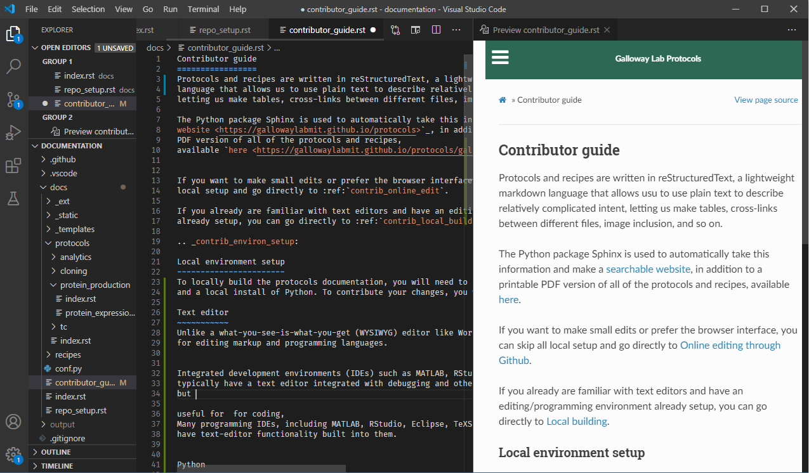
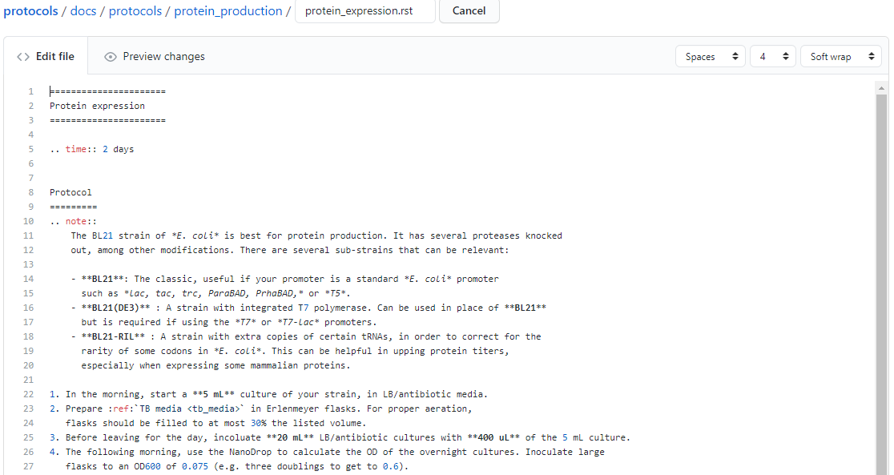

Contributor guide¶
Protocols and recipes are written in reStructuredText, a lightweight markup language that allows us to use plain text to describe relatively complicated intent, letting us make tables, cross-links between different files, image inclusion, and so on.
The Python package Sphinx is used to automatically take this information and make a searchable website, in addition to a printable PDF version of all of the protocols and recipes, available here.
If you want to make small edits or prefer the browser interface, you can skip all local setup and go directly to Online editing through Github.
If you already are familiar with text editors and have an editing/programming environment already setup, you can go directly to Local building.
Local environment setup¶
To locally build the protocols documentation, you will need to have a text editor of your choice and a local install of Python. To contribute your changes, you will need access to git as well.
Text editor¶
Unlike a what-you-see-is-what-you-get (WYSIWYG) editor like Word, a (plain) text editor is used for editing markup and programming languages.
Note
Integrated development environments (IDEs) such as MATLAB, RStudio, TeXStudio, and others typically have a text editor integrated with debugging and other tools. These are helpful, but are often single-purpose. Having a text editor customized to your liking is especially helpful when switching between many languages or if extra customization is desired.
There are many options available:
Built-in editors: Every major OS comes pre-installed with a plain text editor. Windows has notepad, Mac OSX has TextEdit (while this defaults to a rich-text editor, it can also be used as a plain-text editor), and most Linux distros have vi or GEdit.
Terminal-based editors: nano is a basic editor, whereas vim and emacs are extraordinarily customizable.
Standalone editors: These editors can be customized to be nearly IDE-like. On Windows, there is the venerable Notepad++. More recently, there are the commonly used editors Sublime Text, Atom, and VS Code.
Choice of editor is largely a personal preference. If you are doing limited plain-text editing, the built-in editors may be sufficient. Becoming familiar with one of the terminal-based editors is useful when working on remote compute clusters and servers.
If you are looking for a recommendation, VS Code is an excellent, relatively lightweight text editor with plenty of helpful extensions.
Tip
Using a modern text editor is very helpful when working with markup languages such as reStructuredText, Markdown, and LaTeX, as they often have support for live document preview, intelligent spell-check (ignoring programming terms as mis-spelled), and git support (no need to use the git command line or GUI app).
As an example, this document was written in VSCode, with the Python and reStructuredText extensions installed:
{kind=link}
Python/Sphinx¶
Sphinx is used to create the rendered website and PDF. Sphinx relies on a Python version at least as new as Python 3.5.
If you do not already have a working Python version >= 3.5, use the standard Python installer.
Then, install Sphinx and the required Sphinx extensions used here using pip (enter the following without the leading $):
$ pip install -U sphinx sphinx-rtd-theme sphinx-last-updated-by-git
git¶
We use git to manage version history, simultaneous editing, and other features. There are several
excellent tutorials elsewhere that explain how to use git.
If you don’t have git, you can install it from here, and install a GUI tool if you wish (such as the
standalone Github Desktop, or using one built-in to your text editor).
Once you have git installed, you should clone the protocols repository. For any Github repository, you can find the clone
URL by clicking the green “code” button:
{kind=link}
In the case of this repository, the HTTPS clone URL is https://github.com/GallowayLabMIT/protocols.git.
If you access Github using ssh keys, the SSH clone URL is
git@github.com:GallowayLabMIT/protocols.git.
The published version of the website uses the default master branch, so push to this branch to update the website.
A normal workflow to update a protocol would be:
Make changes to the desired files, such as adding pictures, writing new text, and so on.
Locally build the protocols website, checking for any errors (e.g. incorrect reStructuredText)
When there are no build errors, add the files and create a commit describing your changes.
Do a
git pullto merge any new changes, followed by agit pushto update the website.
Local building¶
The documentation can be built by calling the build.py script at the base of this repository.
Normally, this means opening a terminal window, navigating to the repository, and calling:
python build.py
This will attempt to build both the website and the PDF. If you do not have a local LaTeX install (e.g. you either do not uses LaTeX, or you exclusively use online services like Overleaf), then local PDF building will fail. If this is the case, you can skip PDF builds by calling
python build.py --skip-latex
These build functions build the website in the folder output/html. If you want to
view your locally built website, open the file output/html/index.html.
In the case of strange build errors that seem to be because the output directory has been corrupted, you can close any program that might be using the output (a common one might be Adobe Acrobat, with the generated PDF open) and run:
python build.by --force-rebuild
Adding this flag deletes the output folder and recreates it. You can also do this manually
to recreate “rebuild” behavior.
Online editing through Github¶
When editing directly through the Github website, you won’t be able to check for Sphinx build errors or fully preview the generated PDF and website until you commit to the branch. For this reason, doing local builds is preferred.
To create a new file directly through Github, navigate to the folder you want to add the file, and click the Add file dropdown on the right:

To edit through Github, navigate to the file you want to edit, then click the pencil in the upper right of the file view:

Note
While Github does render a preview of what the reStructuredText will look like,
it does not preview how Sphinx will render the final website. For example, we can see in the
above image that the Github preview does not show the custom time directive, and it
does not show the proper link destination for the cross-referenced recipe.
In general, the Github preview will give you a good idea of what tables/lists/other text will appear, but it will not properly render all Sphinx-enabled markup.
This will open an editor window:
{kind=link}
After you are done editing, add a commit message describing your change, and (normally), commit
directly to the master branch. If there is need for further discussion of an added protcol,
creating a secondary branch + pull request could be helpful.
{kind=link}
Note
Make sure you make the commit message more descriptive than the default “Update <filename>” message!
Repository layout¶
All of the relevant documentation files to edit are stored in the docs folder.
Each subdirectory is included as its own sub-level in the table of contents. This
hierarchy is derived from the index.rst that is in each folder. Generally, each
of these index.rst files have the following content; if you create a new
subdirectory you should generally add this as the index.rst file:
============
Section name
============
.. toctree::
:maxdepth: 2
:glob:
*/index
*
Here, glob means that the * is expanded as a wildcard. The first wildcard search,
*/index means “include all subdirectories beneath this directory”. The
second wildcard search * means “include all other .rst files in this directory.
The current subdirectory layout looks like:
docs
├─protocols
│ ├─analytics
│ ├─cloning
│ ├─protein_production
│ └─tc
└─recipes
├─bacteria
└─tc
The .github folder contains the continuous integration script responsible for
updating the website on every push.
Basics of reStructuredText¶
reStructuredText (RST) is a lightweight markup language. This means that it is not as cumbersome as languages like HTML and LaTeX, but still has enough power to make nice looking documents.
There is an excellent RST primer and reference here which should be your primary reference, but here we will cover some of the basics.
One nice feature of the generated website is the ability to view the page source for each page. If there is a protocol that uses some RST feature that you want to replicate, on the desktop version of the website (e.g. not mobile), you can click the “View page source” button in the upper right of any page on the website to see the RST code that generated that page. That includes this page, so check out this page’s source to see how this guide was written!
Note
There are several whitespace-dependent features of RST. This means that you should configure your text editor to insert spaces instead of tabs when you hit the tab button (this is also true if you are programming in whitespace-dependent languages like Python).
Without wading too deeply into the holy war, tabs vs spaces does not mean the difference between pressing the space bar vs hitting tab for indentation, it refers to what character actually gets inserted into the document when you press the tab button.
Long story short, if your text editor inserts literal tab characters, there is possible inconsistency between tools and editors; some may display a single tab character as the width of two spaces, some as the width of four spaces, and so on. This causes problems. If you set your editor to insert spaces, you still hit tab, but the editor inserts some fixed number of spaces, typically four.
This setting will depend per editor. In VS code for example, you don’t have to do anything; it defaults to inserting spaces, but the option looks like this:

Simple markup¶
You can add headers by surrounding the header with equal signs, hyphens, tildes, and other special characters.
Example
Section header
==============
Subsection header
-----------------
Use single asterisks to italicize text. Use double asterisks to bold text. Wrapping double backticks around text renders it in monospace.
Example
*italics* and **bold** and ``monospaced``.
renders as
italics and bold and monospaced.
You can make bullet lists by starting lines with * or #, and you can make numbered lists by starting lines with 1., 2., etc.
If you are nesting lists, you must surround nesting levels with blank lines.
Example
* Lab activities
* Axe throwing
* Pizza party
* ?????
* Lab meme sources
* p53
* Cloning, so much cloning
1. Testing
2. a
3. numbered
4. list
renders as
Lab activities
Axe throwing
Pizza party
Other?
Lab meme sources
p53
Cloning, so much cloning
Testing
a
numbered
list
Explicit markup¶
In RST, an “explicit” block is any block that starts with ... Explicit blocks must be surrounded
on both sides by blank lines, like nested lists. This means that explicit blocks like:
Do the foo, then the bar
.. note::
Make sure you don't do the bar, then the foo!
will not render correctly, it must be written:
Do the foo, then the bar
.. note::
Make sure you don't do the bar, then the foo!
Admonitions¶
To call-out a specific part of a protocol, you can use one of the various admonitions.
This project includes the special time estimation admonition, which demonstrates the general principle. Writing:
.. time::
2 hours
renders as
Estimated time
2 hours
Other directives (code blocks, tables, images, etc) can be fully nested inside these blocks.
Other options commonly used here are hint, important, note, tip, and warning, which render as
Hint
Test
Important
Test
Note
Test
Tip
Test
Warning
Test
Code¶
To insert a codeblock, start an empty line with ::, followed by an indented block that will be rendered as code.
Example
The above code example of the time estimation admonition was written as:
::
.. time::
2 hours
Tables¶
See the table documentation for more details, but in brief, most of the time you can use the “simple” table layout.
In the simple table layout, you simply surround the desired table text with equal signs to set off different columns.
Example
================= ===========================
Ingredient Amount per 1L final volume
================= ===========================
Tryptone 12 g
Yeast extract 24 g
Glycerol 4 mL
Deionized water 900 mL
================= ===========================
renders as
Ingredient |
Amount per 1L final volume |
|---|---|
Tryptone |
12 g |
Yeast extract |
24 g |
Glycerol |
4 mL |
Deionized water |
900 mL |
References and links¶
To reference a standalone hyperlink, you can just simply write it directly in the rst file, no special markup required.
If you want to add link text, use the following syntax:
Example
https://example.org or `Link text <https://example.org>`_
renders as:
If you want to specifically link to other protocols/recipes files, you use the special doc syntax:
Example
:doc:`This <contributor_guide>` is a link to this very document!
renders as:
This is a link to this very document!
as you can see, this is very similar to the external hyperlink, except it has the special :doc: before it, which tells Sphinx
that the document is included in this repository.
If you want to reference a specific subsection of a document, you can set a label and set a reference to it. This is best explained by the documentation, noting that labels that you create are global and shared across the entire repository!
Images¶
To include an image, you can specify it as follows. Typically, you want to align center and make the image fill the available horizontal space, so a common image call would be:
.. image:: image_location/image_filename.png
:width: 100%
:align: center
Math¶
You can write arbitrary LaTeX-formatted math by using the math directive. The math must be separated from the directive by a blank line, followed by an indented math block.
Example
.. math::
E = mc^2
renders as